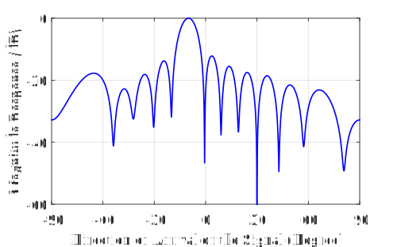
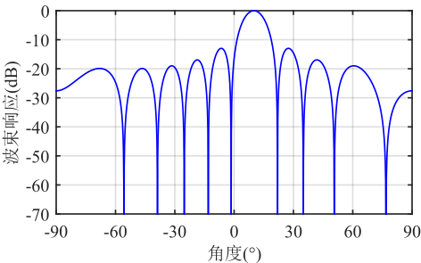

第一章 波束形成基础
1.1 引言
本文主要介绍波束形成系统模型及最小均方无畸变响应（Minimum Variance Distortionless Response, MVDR）波束形成器、最小均方误差（Minimum Mean-Square Error, MMSE）波束形成器、最大信噪比（Maximum Signal to Noise Ratio, MSNR）波束形成器、线性约束最小方差（Linear Constraints Minimum Variance, LCMV）波束形成器。首先，建立阵列信号处理的数学模型，详细介绍阵列结构、信号模型和阵列输出。其次，介绍各个波束形成器的计算公式。最后，通过仿真得出波束图。
1.2 系统模型
1.2.1 基阵
基阵的组成结构影响基阵的空间特性，基阵的组成结构包括两部分：阵元排列几何形状与各阵元的方向性。
基阵依据阵元排列的几何形状可以分为三类：线阵、平面阵和体积阵。
对于一个由\(M\)个阵元组成的阵列，选择某一空间参考点，以该空间参考点为坐标原点，第\(m\)个阵元的位置可以用三维坐标表示\[\mathbf{r}_m = \left[x_m,y_m,z_m\right]^T\]式中，分别为第个阵元的\(x\)、\(y\)、\(z\)坐标。 于是可构造基阵全部阵元位置矩阵为\[\mathbf{R}=\left[\mathbf{r}_1,\mathbf{r}_2,\cdots,\mathbf{r}_M\right]\]
1.2.2 信号模型
假设一平面波点源从空间角\(\Omega=\left(\theta,\phi\right)\)入射到基阵，可以定义信号传播方向的单位矢量为\[\mathbf{\alpha}=\left[\sin\phi\cos\theta,\sin\phi\cos\theta,\cos\phi\right]^T\]于是，信号到达第\(m\)个阵元相对于参考点的时间延时为\[\tau_m\left(\Omega\right)=\mathbf{r}_m^T\alpha\left(\Omega\right)/c,\,m=1,2,\cdots,M\]式中，\(c\)为电磁波传播速度。
令信号的载波为\(e^{j\omega t}\)，以平面波形式在空间沿\(\Omega=\left(\theta,\phi\right)\)方向传播，设基准点处的信号为\(s\left(t\right)e^{j\omega t}\)，则第个阵元接收的信号为\[\begin{aligned}s_m(t)&=s(t-\tau_m)e^{j\omega(t-\tau_m)}\\ & = s(t-\tau_m)e^{j(\omega t - {\mathbf{r}}_m^T{\mathbf{k}})}\end{aligned}\]式中，\({\mathbf{k}}=k{\boldsymbol{\alpha}}=\omega/c\boldsymbol{\alpha}\)为波数向量。
在通信中，信号的频带比载波值小很多，所以的变化相对缓慢，延时，固有，即信号包络在各阵元上的差异可忽略，称为窄带信号。 因此可将阵列信号用向量形式表示为
1.2.3 阵列输出
整个阵列接收到的数据为\[\mathbf{x}\left(t\right)=\sum_{k=1}^{K}s_k\left(t\right)+\mathbf{n}\left(t\right) = \mathbf{A}\mathbf{s}\left(t\right)+\mathbf{n}\left(t\right) \]阵列输出\[y\left(t\right)=\sum_{i=1}^{M}w^*_i\left(\theta,\phi\right)x_i\left(t\right)=\mathbf{w}^H\left(\theta,\phi\right)\mathbf{x}\left(t\right)\]式中，\(\mathbf{w}\)为权重向量，是波束形成算法需要求解的关键。
求解出权重向量，波束响应，即波束方向图为\[F\left(\theta,\phi\right) = \mathbf{w}^H\mathbf{a}\left(\theta,\phi\right) \]
1.3 波束形成问题描述
假设远场空间有一个感兴趣的信号\(s_d\left(t\right)\)，称为期望信号，其波达方向为\(\theta_d\)，和\(J\)个不感兴趣的信号\(s_{ij},\left( j=1,2,\cdots,J\right)\)，称为干扰信号，其波达方向分别为\(\theta_{ij}\)，每个阵元上的加性白噪声为，则第\(m\)个阵元接收到的信号为\[x_m\left(t\right)=a_m\left(\theta_d\right)s_d\left(t\right)+\sum_{j=1}^{J}a_m\left(\theta_{ij}\right)s_{ij}\left(t\right)+n_m\left(t\right)\]对于整个阵列，写成矩阵形式为\[\begin{aligned} \mathbf{x}\left(t\right)& =\mathbf{a}\left(\theta_d\right)s_d\left(t\right)+\sum_{j=1}^{J}\mathbf{a}\left(\theta_{ij}\right)s_{ij}\left(t\right)+{\mathbf{n}}\left(t\right)\\ & = \sum_{k=1}^{K}\mathbf{a}\left(\theta_{k}\right)s_{k}\left(t\right)+{\mathbf{n}}\left(t\right) \end{aligned}\]式中，\(\mathbf{a}\left(\theta_k\right)=\left[ a_1\left(\theta_k\right),a_2\left(\theta_k\right),\cdots,a_M\left(\theta_k\right)\right]\)，表示来自波达方向\(\theta_k\)的发射信源的方向向量，\(k=1,2,\cdots,K\)，\(K=1+J\)。
\(N\)个快拍的波束形成器输出\(y\left(t\right)=\mathbf{w}^H\left(\theta\right)\mathbf{x}\left(t\right)\)的平均功率为\[\begin{aligned} P\left(w\right) & = \dfrac{1}{N}\sum_{t=1}^{N}\left| y\left(t\right)\right| ^2=\dfrac{1}{N}\sum_{t=1}^{N}\left| \mathbf{w}^H\mathbf{x}\left(t\right)\right| ^2 \\ & = \left| \mathbf{w}^H\mathbf{a}\left(\theta_d\right)\right| ^2\dfrac{1}{N}\sum_{t=1}^{N}\left| d\left(t\right)\right| ^2 +\sum_{j=1}^{J}\left[\dfrac{1}{N}\sum_{t=1}^{N}\left| i_j\left(t\right)\right| ^2\right]\left| \mathbf{w}^H\mathbf{a}\left(\theta_{ij}\right)\right| ^2 + \dfrac{1}{N}\left\|\mathbf{w}\right\|^2 \sum_{t=1}^{N}\left\| {\mathbf{n}}\left(t\right)\right\| ^2\\ \end{aligned}\]
这里忽略了不同信号之间的相互作用项，即交叉项\(s_{ij}\left(t\right)s_{ik}^*\left(t\right)\)，当\(N\to\infty\)时，上式可写为\[\begin{aligned} P\left(w\right) & =\mathrm{E}\left[\left| y\left(t\right)\right| ^2\right]=\mathbf{w}^H\mathrm{E}\left[\mathbf{x}\left(t\right)\mathbf{x}^H\left(t\right)\right]\mathbf{w}=\mathbf{w}^H{\mathbf{Rw}} \\ & =\mathrm{E}\left[\left|d\left(t\right) \right|^2 \right]\left|\mathbf{w}^H\mathbf{a}\left(\theta_d\right) \right| ^2+\sum_{j=1}^{J}\mathrm{E}\left[\left|i_j\left(t\right) \right\| ^2\right]\left|\mathbf{w}^H\mathbf{a}\left(\theta_{ij}\right) \right| ^2+\sigma^2_n\left\| \mathbf{w}\right\|^2 \\ \end{aligned}\]式中，\(\mathbf{R} = \mathrm{E}\left[ \mathbf{x}\left(t\right)\mathbf{x}^H\left(t\right)\right]\)为阵列输出的协方差矩阵。为了保证来自方向\(\theta_d\)期望信号的正确接收，并完全已知其他\(J\)个干扰，很容易根据上式得到关于权重的约束条件\[\left\lbrace\begin{aligned} & \mathbf{w}^H\mathbf{a}\left(\theta_d\right)=1 \\ & \mathbf{w}^H\mathbf{a}\left(\theta_{ij}\right)=0 \\ \end{aligned}\right. \]该约束条件被称为波束“置零条件”，因为它强迫接收阵列波束方向图的“零点”指向所有个干扰信号。在满足约束条件时，保证噪声最小，则优化目标函数为\[\min_\mathbf{w} \mathrm{E}\left[\left|y\left(t\right) \right|^2\right]=\min_\mathbf{w} \mathbf{w}^H\mathbf{Rw} \]则波束形成问题可以表述为\[\begin{aligned} \min_\mathbf{w} \quad& \mathbf{w}^H{\mathbf{Rw}} \\ \mathrm{s.t.} \quad& \left\lbrace\begin{aligned} & \mathbf{w}^H\mathbf{a}\left(\theta_d\right)=1 \\ & \mathbf{w}^H\mathbf{a}\left(\theta_{ij}\right)=0 \\ \end{aligned}\right. \end{aligned} \]
 